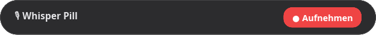
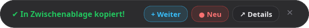
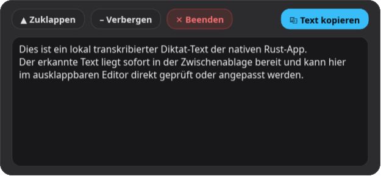
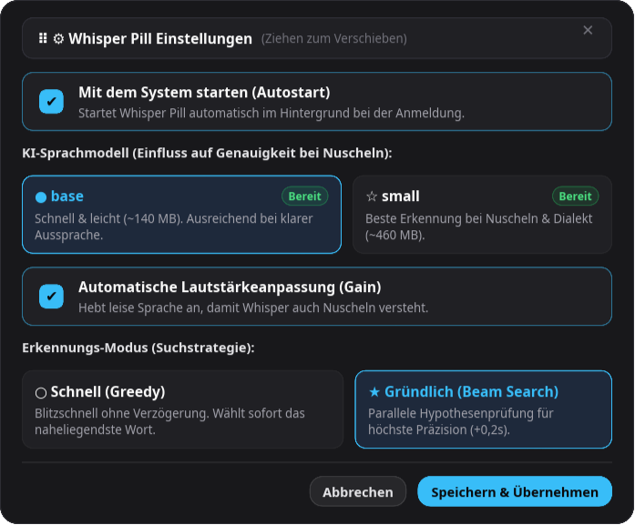

Schlankes, minimalistisches Desktop-Diktier-Utility für KDE Plasma, XFCE & GNOME – 100 % lokal & datenschutzfokussiert
Whisper Pill ist als autarkes, nur ca. 13 MB großes Linux-AppImage gebündelt und benötigt keine Installation oder Root-Rechte. Lege die Datei idealerweise an einem festen Ort in deinem Benutzerverzeichnis ab (z. B. ~/Applications/), damit auch der optionale System-Autostart dauerhaft darauf zugreifen kann:
# 1. Ausführrechte vergeben (einmalig)
chmod +x dist/Whisper_Pill-x86_64.AppImage
# 2. Anwendung starten (nistet sich im System-Tray ein)
./dist/Whisper_Pill-x86_64.AppImage
# Optionale CLI-Parameter:
./dist/Whisper_Pill-x86_64.AppImage --version
./dist/Whisper_Pill-x86_64.AppImage --helpKGlobalAccel./component/whisper_pill – andere Shortcuts wie F12 (Yakuake) oder die Super-Taste (Kickoff/KRunner) bleiben vollkommen unberührt.StatusNotifierItem-Protokoll in der XFCE-Benachrichtigungsfläche (xfce4-statusnotifier-plugin)._NET_WM_STATE_SKIP_TASKBAR und _NET_WM_STATE_SKIP_PAGER via xprop, sodass die Kapsel rahmenlos schwebt.xfce4-keyboard-settings startbar; Mikrofonauswahl bequem via pavucontrol.Kompakte Bereitschaftsansicht am Bildschirmrand (0 % CPU-Last im Standby) mit direktem Start-Button:

Während des Sprechens zeigen 11 zentrierte Wellenform-Balken den Mikrofonpegel in Echtzeit an. Eine automatische Stille-Erkennung (VAD) beendet die Aufnahme nach einer Sprechpause selbstständig oder du klickst auf [■ Stop]:
Das Transkript liegt sofort in deiner Zwischenablage zum Einfügen mit Strg + V bereit. Mit [+ Weiter] hängst du weitere Sätze nahtlos an, mit [● Neu] startest du von vorn und mit [↗ Details] öffnest du den Editor. Ohne Interaktion blendet sich die Kapsel nach 8 Sekunden von selbst wieder aus:

Mehrzeiliger, per Mausrad und Scrollbalken frei scrollbarer Editor zur Prüfung und Nachbearbeitung längerer Diktate. Über die Kopfzeile erreichst du [▲ Zuklappen], [– Verbergen], [✕ Beenden] und [⎘ Text kopieren]:

Erreichbar per Rechtsklick auf das Tray-Icon → Einstellungen.... Ermöglicht die Konfiguration von System-Autostart (inkl. selbstheilender AppImage-Pfadauflösung), KI-Sprachmodell (base vs. small inkl. Direkt-Download), automatischer Mikrofon-Verstärkung (Gain) und Suchstrategie (Schnell / Greedy vs. Gründlich / Beam Search):

| Aktion | Tastenkürzel / Geste | Beschreibung |
|---|---|---|
| Aufnahme starten / stoppen | Super + Strg + P | Startet oder beendet die Sprachaufnahme global aus jeder Anwendung heraus. |
| Text einfügen | Strg + V | Fügt das automatisch kopierte Transkript im aktiven Zielfenster ein. |
| Kapsel verschieben | Linke Maustaste ziehen | Positioniert die Pill frei per Drag & Drop; Koordinaten werden dauerhaft gespeichert. |
| Tray-Kontextmenü | Rechtsklick auf Tray-Icon | Schnellzugriff auf Aufnahme, Autostart, Einstellungen, Fehlerlog und Beenden. |
| Kapsel verbergen | [– Verbergen] / [✕] / 8s |
Minimiert das Fenster in den System-Tray. |
| Anwendung beenden | [✕ Beenden] / Tray-Menü |
Beendet Whisper Pill vollständig. |
~/.config/whisper_pill/config.json~/.cache/whisper_pill/ggml-base.bin bzw. ggml-small.bin~/.local/share/whisper_pill/whisper_pill_error.log (direkt über Rechtsklick auf Tray-Icon → Fehlerlog öffnen einsehbar)~/.config/autostart/whisper-pill.desktop